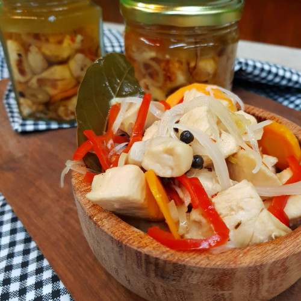

Pollo al escabeche
Cocineros Argentinos

Disfrutá de un espectacular ESCABECHE DE POLLO siguiendo la receta que preparó Juan Braceli en el programa de hoy! Que lo disfrutes.
INGREDIENTES
- 2 pechugas.
- 2 patamuslos.
- 1 taza de vinagre blanco.
- 1 taza de vino blanco.
- 1 taza de agua.
- 2 cebollas chicas cortadas en pluma.
- 2 puerros cortados en rueditas.
- 1 morrón en juliana.
- 2 zanahorias chicas.
- 1 atadito de hierbas frescas (romero, tomillo y orégano).
- 3 dientes de ajo en láminas.
- 1 hojita de laurel.
- Sal, pimienta y ají molido.
Mezcla para cubrir:
1 taza de vinagre blanco.
1 taza de vino blanco.
1 taza de aceite de girasol.
Procedimiento:
- Cortar las presas de pollo en trozos pequeños (3 x 3 cm)
- En una olla o cacerola llevar a hervor 1 taza de vinagre, 1 de vino, 1 de agua con un poco de sal, pimienta, ají molido y el atado de hierbas.
- Agregar el pollo y hervir unos minutos.
- Agregar los vegetales y seguir hirviendo hasta que el pollo esté cocido y los vegetales blanqueados.
- Retirar del fuego y escurrir.
- En una sartén saltear con un poco de aceite hasta que tome color dorado.
- Hervir la mezcla de 1 taza de vinagre, 1 taza de vino blanco y 1 taza de aceite.
- Colocar pollo y vegetales en un frasco esterilizado y cubrir con la mezcla, que debe estar muy caliente.
- Cerrar y hervir cubierto con agua durante 20 minutos.
(Conservar en la heladera durante 1 semana.)